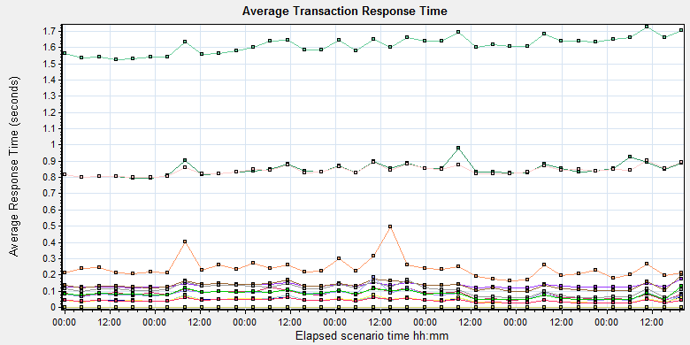

Transaction End Status = (Pass), (do not Include Think Time)
Group By:
Granularity:
16384 Seconds
Graph data in Excel format

Color
Scale
Measurement
Graph's Minimum
Graph's Average
Graph's Maximum
Graph's Median
Graph's Std. Deviation
1
Create New Patient
0.12
0.133
0.177
0.131
0.012
1
Film Create_PrintTask
0.798
0.85
0.978
0.839
0.038
1
Film PrintTask
0.043
0.081
0.125
0.084
0.022
1
Film PrintTask_Result_Correct
0
0
0
0
0
1
Film TerminalStatus
0.027
0.043
0.067
0.044
0.011
1
Film_PrintStatus_CheckService
0.026
0.044
0.079
0.042
0.014
1
Notify File 100k
0.097
0.134
0.203
0.131
0.024
1
Notify File 4M
0.164
0.239
0.498
0.227
0.062
1
Report Print Task Correct
0
0
0
0
0
1
Report Create_PrintTask
0.798
0.842
0.903
0.843
0.027
1
Report PrintTask
0.045
0.079
0.186
0.08
0.027
1
Report PrintTask Status Check
0.028
0.044
0.079
0.043
0.013
1
Report QueryFilmReportInfo
1.526
1.613
1.727
1.617
0.052
1
Report TerminalStatus
0.025
0.041
0.058
0.041
0.01
1
Report Update PrintTask
0.06
0.107
0.166
0.112
0.031
1
Report Update report printer info
0.048
0.081
0.13
0.084
0.022
Description: Displays the average time taken to perform transactions during each second of the load test. This graph helps you determine whether the performance of the server is within acceptable minimum and maximum transaction performance time ranges defined for your system.